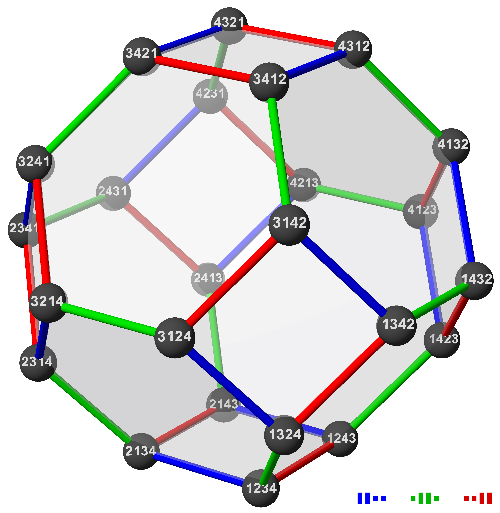

| • Positions of tokens | • Permutation in $S_n$ |
| • Graph edge | • Transposition (swap) |
| • Configuration space | • Cayley graph |
| • Reconfiguration | • Path in Cayley graph |
|  | |
| https://commons.wikimedia.org/wiki/File:Symmetric_group_4;_Cayley_graph_1,2,6_(1-based).png | |
| Path graph | Sorting by swapping adjacent elements |
| Min number of swaps | Number of inversions / cost of bubble sort |
Restricted moves
Leapfrog move
Monkey moves
Restricted move
Monkey move
Restricted move
Forbidden pattern
Restricted moves
Forbidden patterns
| Model: | Restricted | Restricted + Leapfrog | Restricted + Leapfrog + Monkey |
|---|---|---|---|
| Hexagons | PSPACE-hard | Universal:$O(n^3)$ moves | |
| Squares | PSPACE-hard | PSPACE-hard | PSPACE-hard |
| Model: | Restricted | Restricted + Leapfrog | Restricted + Leapfrog + Monkey |
|---|---|---|---|
| Hexagons | PSPACE-hard | Universal:$O(n^3)$ moves | |
| Squares | PSPACE-hard | PSPACE-hard | PSPACE-hard |
| Model: | Restricted | Restricted + Leapfrog | Restricted + Leapfrog + Monkey |
|---|---|---|---|
| Hexagons | PSPACE-hard | Universal:$O(n^3)$ moves | |
| Squares | PSPACE-hard | PSPACE-hard | PSPACE-hard |
.png){kind=link}